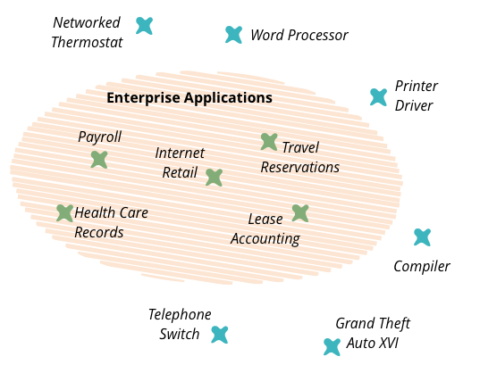
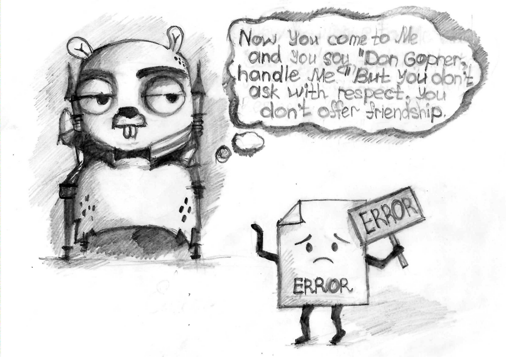

观点：Go 尚未准备好用于企业系统，原因在这里
译注：发表这篇文章，不代表我认同作者的观点。大家都知道，在国内，Go 已经被很多大厂使用，早就可以用于企业系统。
对一门语言的爱，可以接受任何不同的观点，真理总是越辩越明，相信有不同的声音，Go 也会越来越好。欢迎大家留言发表你的看法。
介绍
企业应用程序是一个寿命长、可靠的系统，具有多年的持久数据。如今，Golang 的世界并没有提供以企业系统构建方式构建系统的可能性。

Golang 的发展文化
让我们考虑几个问题，如错误处理不当、 手动组合的 SQL 查询和面向轮子开发。
错误处理不当
Golang 在错误处理方面提供了更多的自由。由于开发人员方面缺乏责任，这通常会导致应用程序中的错误处理不当。
最常见的情况与 sql 查询的执行有关：
defer rows.Close() // omitted errors from sql driver
没有明确的方法来处理此返回的错误。实际上，该语言提供了捕获错误的特定方法：
result, err := foo()
该错误是一个典型的返回值，可以通过各种方式忽略：
defer rows.Close() // omitted errors from sql driver
defer body.Close() // omitted IO errors
result, _ := foo() // omitted errors from foo function

此外，它会导致应用程序在 panic 函数调用后立即崩溃的风险增加，并且通常会降低可靠性。
根据 M.Nygard 的 “Release it!”，可靠的系统必须处理每个不重要的错误而不会崩溃。没有权衡。
作为解决方案，我们可以使用其他语言的 try/catch/finally 结构添加可靠的机制。此外，还需要消除 panic 函数。当然，这将是一种较慢的方法，但更可靠。
手动编写 SQL 查询语句
Golang 中处理数据库查询的典型方法是手动编写查询。如果 SQL 查询被手工编写的，那么数据库集成将是一个瓶颈。并非所有开发人员都擅长 SQL 和使用数据库。诸如 Hibernate（Java）和 Entity Framework（.NET）之类的功能齐全的 ORM 生成的典型查询已开放，用于数据库和缓存数据优化。这是根据 ‘Release it’ 来编写可靠的应用程序的最有效方法之一。
有些库将来可能是功能齐全的ORM（例如 GORM 和 XORM）。我相信，与手工编写的 SQL 查询相比，它们将来会更受欢迎。
重新发明轮子
通常，Golang 开发人员都在选择重新发明轮子。轮子无处不在：task scheduler，迁移工具，logger，worker pool，十进制数字的库，授权库和其他工具。
它们没有经过良好的测试，没有良好的文档，在生产中使用不足。风险太高，不能在企业应用程序中使用它们。
为了减少使用风险代码的可能性，检查是否有可用的解决方案。例如可以查看 awesome-go 。
生态系统
Go 世界的生态系统包括 Consul, Kubernetes, Zipkin 和 Træfik 等。它是一个非常年轻且发展迅速的技术栈，没有公认的使用标准。
Golang 生态系统中没有任何工具可以帮助建立可靠的企业系统。
考虑到以上所有情况，我们需要非常谨慎地将第三方中间件集成到基础架构中，公司必须有足够的专业知识支持该过程。否则，它将成为具有不同技术的生产环境中的雷区。好消息是，市场有很多管理解决方案，以最大限度地降低风险。不幸的是，它很贵。
Golang 生态系统太年轻，缺乏工具、编程文化，但我相信它将来会成为一个伟大的生态系统，并拥有伟大的程序员。语言社区正朝着正确的方向努力：性能和简化。但是，我们不能忘记可靠性也很重要。我们越早了解可靠性的价值，我们就会越快地用 Golang 编码更多、更好的企业系统。
P.S.
我很惊讶，这篇文章有这么多的解释。可惜很多人错过了文章的重点。
这篇文章：
1）不是关于我
2）不是关于我的技能
3）不是关于我的狗
*4）*不是关于“为什么我的狗在其企业狗系统中不需要使用 Golang”
5）不是关于 Golang 的最佳编码实践
6）不是关于与处理 go 错误有关的最佳实践
7）不是关于如何以正确的方式选择正确的工具
8）不是关于 Golang 的一般设计
9）不是关于“没有人可以将 Go 用于企业系统”
10）不是关于“没有人需要将 Go 用于企业系统”
正如我所观察到的，这涉及将 Golang 用于企业的风险（在“ Golang”下，我的意思更多在于文化和生态系统，而不是语言设计）。这是我的看法。
当然，很多大公司，如谷歌和 Netflix 在企业中使用 Golang，在我看来，他们一样有风险（记住，谷歌使用 Golang 时，这种语言还没有包带版本的管理器 ）。其他开发人员可以有其他观点和其他经验并观察。
本文的主要目的是进行讨论，看看有多少人有相同的看法。
参考
图书：《Release It! Design and Deploy Production-Ready Software》
图书：《Patterns of Enterprise Application Architecture》by Martin Fowler
原文链接：https://medium.com/@afondmitro/golang-is-not-ready-for-enterprise-systems-yet-and-heres-why-c0ee72069963
作者：Dmitry Afonkin
编译：polarisxu